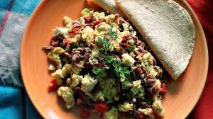
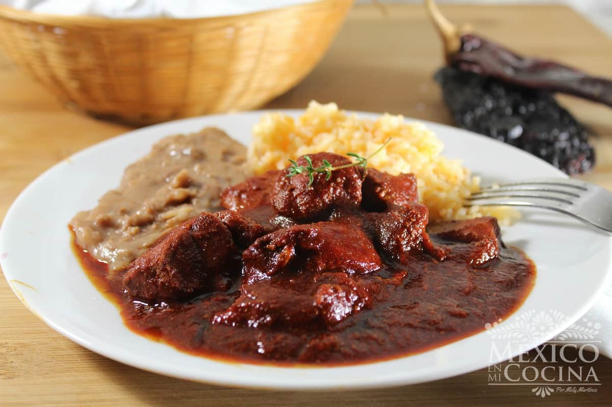
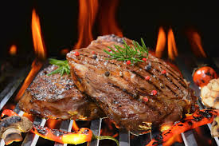
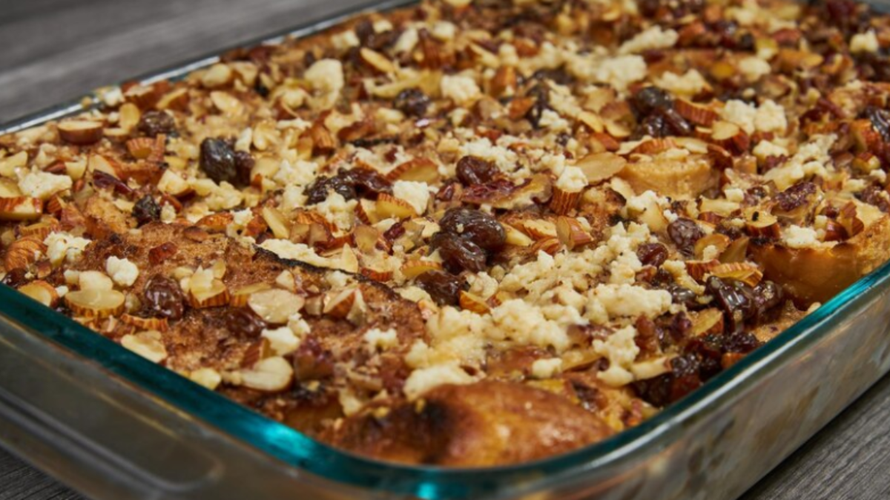
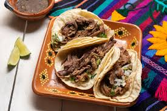
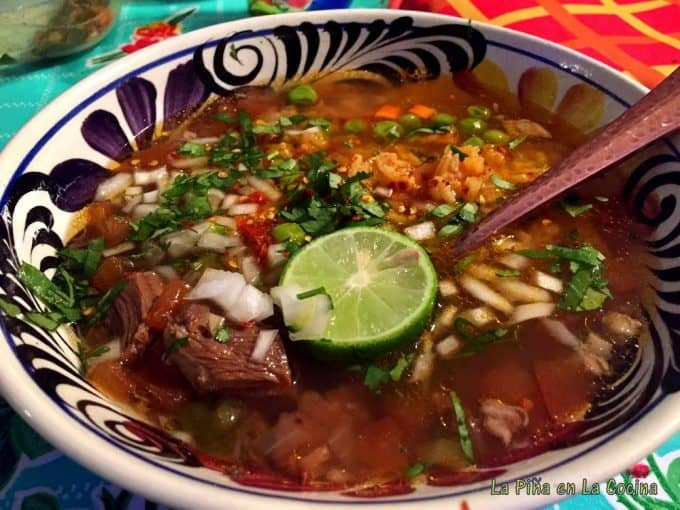

COMIDA
Cabrito
Según la leyenda, un pastor se había alejado demasiado de su hogar. Con nada más que un cuchillo, aprovechó la muerte accidental de un cabrito para limpiarlo, ponerlo en un palo y saciar su hambre. Así nació el cabrito al pastor como emblema del norte de México. Este plato se prepara con filetes de carne de cabrito, estos se pueden asar, guisar, freír o al gusto.
Machacado con huevo
Hablando del origen de este platillo típico existen varias versiones, pero la más conocida indica que surgió en 1928, en el municipio de Ciénega de Flores. Fidencia Quiroga Chavarría es el nombre de la mujer que creó el machacado con huevo, cuenta la historia que la Tía Lencha pensando en cómo sacar adelante su pequeño negocio de comida optó por implementar la carne seca, ya que era fácil de conservar Después de experimentar con varios ingredientes, la famosa cocinera creó el machacado con huevo luego de guisar la carne seca con cebolla, tomate, chile y huevo.
Asado de puerco
Este es un guisado en salsa roja hecha con chiles secos, como guajillo y chile ancho, este regularmente se sirve con arroz. Es parte de la gastronomía tradicional de Nuevo León, es tan volátil que se puede encontrar en una boda tradicional o un puesto de tacos en un mercado.
Carne asada
Este platillo no es solo una comida más, la razón por la que la carne asada es tan apreciada y popular por los regiomontanos es porque se trata de un medio para socializar y crear vínculos entre las personas. Es un generador de experiencias y recuerdos inolvidables, se ha convertido en tradición asar una rica arrachera con tus seres queridos para celebrar un cumpleaños, un bautizo, o simplemente celebrar el hecho de estar vivos y querer pasar un rato agradable.
Capirotada
La crearon los españoles y la perfeccionamos nosotros, este es un platillo que se consume mayormente en la cuaresma, hay muchas formas de prepararlo, pero generalmente lleva pan añejado, pasas, nuez, jarabe de piloncillo y almendras.
Tacos de barbacoa
Es tradición cada domingo levantarse temprano para ir a comprar barbacoa y hacerse unos ricos tacos, esta carne es de res, puede ser chambarete, falda, lengua, o cualquier otro corte que se deshebre fácil.
Cuajitos
Tradicionalmente, los cuajitos son las bolsas de becerro que se rellenan con trozos de carne de pierna del mismo animal. Se mezcla y se sazona en un caldo con jitomate, cebolla, chile rojo, pimiento morrón, orégano, pimienta, comino, ajo, puré de tomate y sangre de animal. Este platillo suele consumirse los domingos por la mañana con unas ricas tortillas de maíz o igual para quitar la cruda.